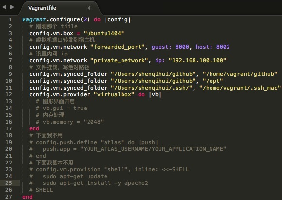
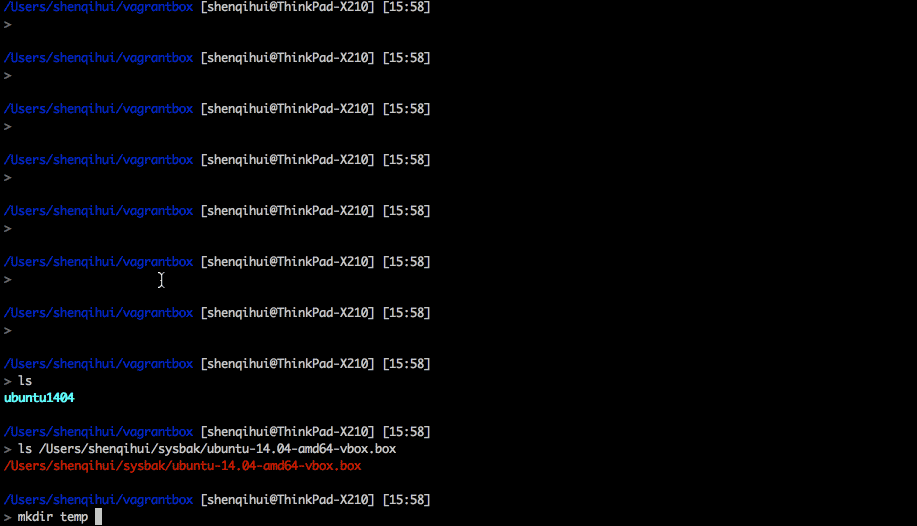

我的程序员经验分享
神奇辉
微博：@神奇辉
Github：shenqihui
Blog: http://blog.shenqh.com
神奇辉
微博：@神奇辉
Github：shenqihui
Blog: http://blog.shenqh.com
参考链接：http://www.stutostu.com/?p=1395
常用的 vagrant file 配置 
实际 vagrant 编码，上面那幅图的文字版本
Vagrant.configure(2) do |config|
# 刚刚那个 title
config.vm.box = "temp"
# 虚拟机端口转发到宿主机
config.vm.network "forwarded_port", guest: 8000, host: 8002
# 设置内网 ip
config.vm.network "private_network", ip: "192.168.100.100"
# 文件挂载，写绝对路径
config.vm.synced_folder "/Users/shenqihui/github", "/home/vagrant/github"
config.vm.synced_folder "/Users/shenqihui/github", "/opt"
config.vm.synced_folder "/Users/shenqihui/.ssh/", "/home/vagrant/.ssh_mac"
config.vm.provider "virtualbox" do |vb|
# 图形界面开启
# vb.gui = true
# 内存处理
# vb.memory = "2048"
end
# 下面我不用
# config.push.define "atlas" do |push|
# push.app = "YOUR_ATLAS_USERNAME/YOUR_APPLICATION_NAME"
# end
# 下面我基本不用
# config.vm.provision "shell", inline: <<-SHELL
# sudo apt-get update
# sudo apt-get install -y apache2
# SHELL
end
1.4M GIF, 时长 2 min ， 一次播放，想重复看刷新页面即可。
看到 vagrant@ubuntu-14:~$ ls 就结束了。

举个 js 领域的例子：js 数组排序的问题
[3,4,5,6,7,8,9,2,3,1,1,2,3,4,5,].sort()
[1, 1, 2, 2, 3, 3, 3, 4, 4, 5, 5, 6, 7, 8, 9]
[3,4,5,6,7,8,9,2,3,1,1,2,3,4,5,].sort(function(a, b) {
return a - b;
})
[1, 1, 2, 2, 3, 3, 3, 4, 4, 5, 5, 6, 7, 8, 9]
[3,4,5,6,7,8,9,2,3,1,1,2,3,4,5,].sort(function(a, b) {
return b - a;
})
[9, 8, 7, 6, 5, 5, 4, 4, 3, 3, 3, 2, 2, 1, 1]
[3,4,5,6,7,8,9,2,3,1,1,2,3,4,5,].sort(function(a, b) {
return Math.random() - 0.5
})
[3, 5, 5, 9, 2, 4, 1, 3, 8, 3, 1, 6, 7, 4, 2]
举个 js 领域的例子：js 数组排序的问题
为什么返回不同返回值，排序顺序就不同？
出自：MDN> Web 技术文档> JavaScript> JavaScript 参考文档> JavaScript 标准库> Array> Array.prototype.sort()
感谢大家
感谢 nodePPT